1 tl;dr
Spin up a mobile-friendly Shiny app that stores data in an hour.
[This project was inspired by a section of Yihui Xie’s bookdown that demonstrates how to embed Shiny Apps. His example uses Joe Cheng’s miniUI package.]
Sitting in the library for one of the first times during business school with the intention of studying for an economics final, I instead decided that building a shiny app was a better use of a Monday night. In this post, we will walk through the steps necessarily to get a mobile-optimized Shiny app running. Time estimate is approximately an hour. This quick project is a testament to how RStudio’s tools make creating custom web apps.
I was working with a dataset from Buzzfeed on American’s ability to distinguish accurate and inaccurate news in the wake of the 2016 presidential election. This app was a means to show others just how difficult identifying fake news can be.
2 Setup Shinyapps.io
Setting up shinyapps.io to host the app is the easiest part of the process.
2.1 Setup an account on shinyapps.io
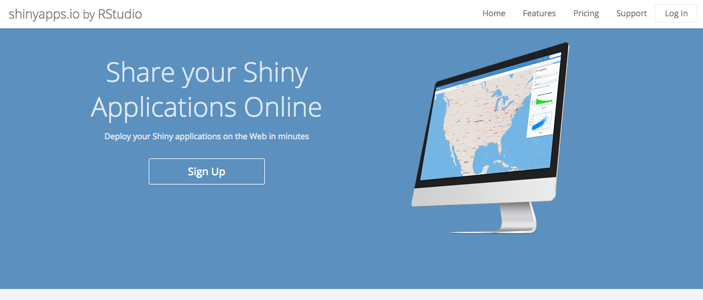
2.2 Setup rconnect in your R environment.
install.packages('rconnect')
library('rconnect')On shinyapps.io, go to Account → Tokens then + Add Token. Then click Show and copy this statement run in R.
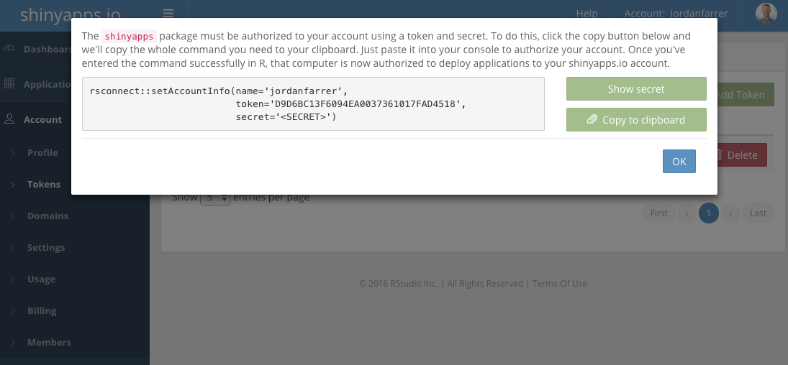
3 MySQL DB to Store Data
The hardest part of this process is creating a place for persistent storage. This summary of options by Dean Attali was extremely helpful in getting me started. Unfortunately I was unable to use the new Amazon Lightsail VPS because only SSH connections are allowed, which would not be possible from the shinyapps.io server without its own key and port-forwarding.
3.1 Spin up an EC2 instance, if you do not already have one
From the EC2 Dashboard, click Launch Instance, select Ubuntu, and use the t2.micro which is part of the free tier.
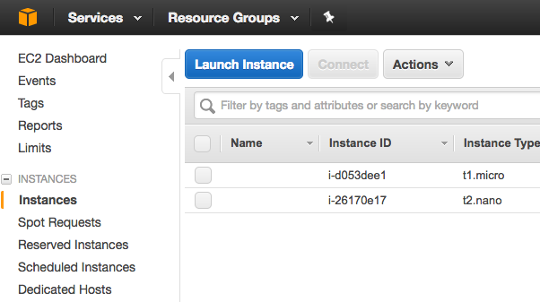
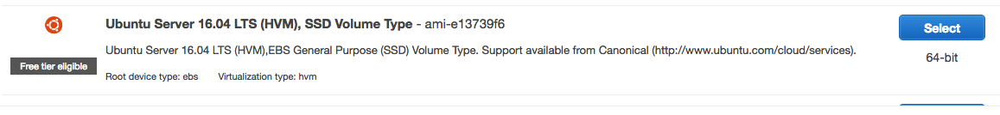
On the tab 6. Configure Security Group, add a new rule for MYSQL/Aurora, which will add port 3306. Then copy 0.0.0.0/0 into the Source section.
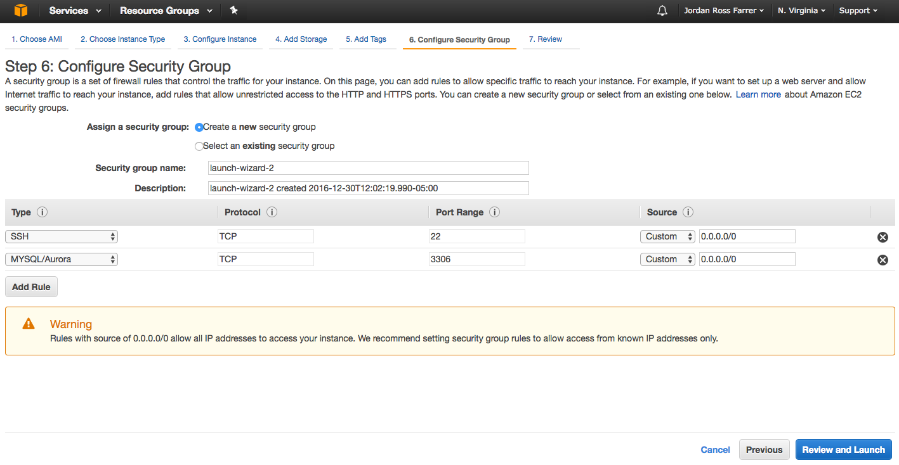
Then go to Review and Launch to finish the process. You will need to select a new or existing SSH key pair. To learn more about SSH key pairs, see this AWS article.
3.2 SSH into the EC2 instance
Once the instance is running with the bright green ball next to it, copy the Public DNS and SSH into the machine.
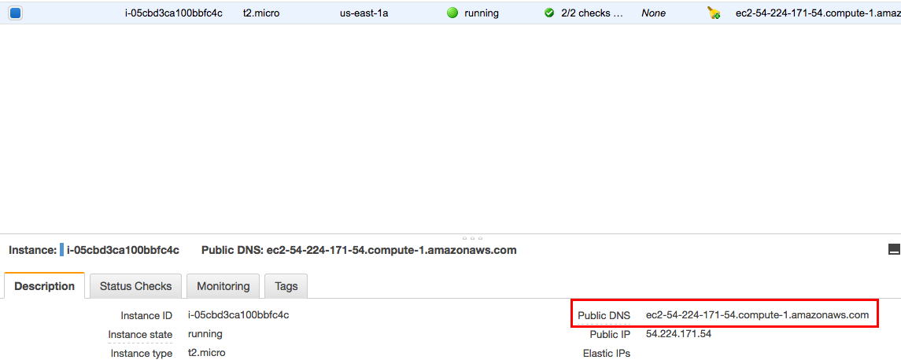
ssh -i macbookair.pem ubuntu@ec2-XXXXXXXXX.compute-1.amazonaws.com3.3 Install MySQL Server
sudo apt-get update
sudo apt-get install mysql-serverAfter the second command you’ll need to click Y and type in a password for the root user of MYSQL.
3.4 Configure the MySQL installation by running
sudo mysql_secure_installationAfter typing the root password, say no by clicking any key and then Y to the remaining questions.
3.5 Test the server is running with the command
service mysql statusYou should see something like this
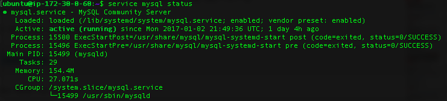
3.6 Access MySQL via the shell
Run the following command and enter the password for the root MySQL user.
mysql -u root -p3.7 Run SHOW DATABASES; to see the default databases:
SHOW DATABASES;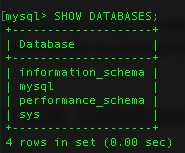
3.8 Create a database for our app called fake_news
CREATE DATABASE fake_news;Once it’s created, switch to the new database with
USE fake_news;3.9 Create one simple table with the command:
CREATE TABLE responses (
id INT NOT NULL PRIMARY KEY AUTO_INCREMENT,
email VARCHAR(254),
domain VARCHAR(64),
q_id INT,
response BOOLEAN
);As a test, insert two records:
INSERT INTO responses (email, domain, q_id, response)
VALUES ("test","gmail.com", 2, TRUE),
("test2","gmail.com", 1, FALSE);
SELECT * FROM responses;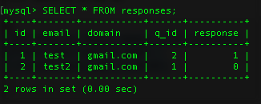
Then delete them:
DELETE FROM responses;
SELECT * FROM responses;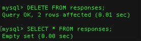
3.10 Create an account Access for a user for the app
Here we will create a user that has complete access to the database. This tutorial is an example and obviously in a production environment you would do this differently.
CREATE USER 'new_username'@'localhost' IDENTIFIED BY 'new_password';
CREATE USER 'new_username'@'%' IDENTIFIED BY 'new_password';
GRANT ALL ON *.* TO 'new_username'@'localhost';
GRANT ALL ON *.* TO 'new_username'@'%';
GRANT ALL PRIVILEGES ON *.* TO 'new_username'@'%' IDENTIFIED BY 'new_password' WITH GRANT OPTION;If you are curious about the password requirements, check your environment variables that were set during configuration:
SHOW VARIABLES LIKE 'validate_password%';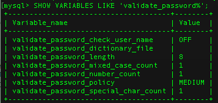
You also need to edit the my.cnf file to enable remote access. First quit MySQL with the exit command. Run the following command that opens my.cnf in the text editor vim.
sudo vim /etc/mysql/my.cnfHit a on the keyboard to enter insert mode, scroll down to right below the comment and paste the following in.
[mysqld]
#
# * Basic Settings
#
user = mysql
pid-file = /var/run/mysqld/mysqld.pid
socket = /var/run/mysqld/mysqld.sock
port = 3306
basedir = /usr
datadir = /var/lib/mysql
tmpdir = /tmp
lc-messages-dir = /usr/share/mysql
skip-external-locking
#
# Instead of skip-networking the default is now to listen only on
# localhost which is more compatible and is not less secure.
bind-address = 0.0.0.0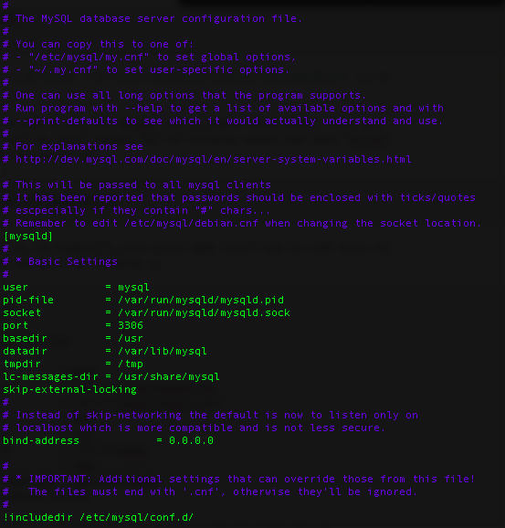
Then tap esc then :, and type wq! and hit enter so save and exit. Then run the following command to restart MySQL.
sudo /etc/init.d/mysql restartThe hard stuff is over!
4 Create App
This part is relatively easy as we are making a simple Shiny app using the miniUI. In this app we have 3 tabs:
- Tab 1: Users select whether they believe the news headline is Real / Fake and submit an email address
- Tab 2: Users view their results and see mistakes highlighted in red and the percent of others who have gotten that headline correct
- Tab 3: Users shown a “leaderboard” of correct responses based on domain. My idea was that this could be a competition among business schools.
To get this app running for yourself, clone the repo https://github.com/jrfarrer/fake_news_app and then modify the credentials in credentials.R.
host <- "ec2-XXXXXXXXXXXX.compute-1.amazonaws.com"
user <- "fake_news"
password <- "XXXXXXXXXXXXXXX"
mailbox_layer <- "XXXXXXXXXXXXXXX"You’ll recognize the first 3 credentials in the image above as related to the MySQL serve we setup. The last credential relates to mailboxlayer API, which is an email verification service. I use this to check whether the email address is a real email address. It is easy to signup for free and get an API key that you can paste in. With each call to the mailboxlayer API, you receive a score on the likelihood the provided address is legitimate. In the app.R I set a threshold of 0.65 and also use the domain returned to check that it is a .edu address to better support the leaderboard objective.
4.1 Shiny App Explained
4.1.1 Articles
The news headlines come from a pipe-delimited text file that I put together from information in this Buzzfeed repo.
4.1.2 Bootstrap Toggles
One of the things shiny users might have noticed immediately is the non-shiny widgets. Bootstrap toogles seemed like the appropriate user interaction. I created these by creating checkboxes manually and then adding the stylesheet and javascript from Bootstrap.
isolate({
time_int <- round(as.numeric(Sys.time()) - as.numeric(as.POSIXct(Sys.Date())),0)
})
output$toggles <- renderUI({
toggles <- paste0('<div class="checkbox">
<label class="clearfix">
<input id=', articles$id[randos[, time_int]],' checked type="checkbox" data-toggle="toggle" data-on="Real" data-off="Fake" data-size="small">', articles$article[randos[, time_int]],'
</label>
</div>')
HTML(paste0('<head>
<link rel="stylesheet" type="text/css" href="https://gitcdn.github.io/bootstrap-toggle/2.2.2/css/bootstrap-toggle.min.css">
<script type="text/javascript" src="https://gitcdn.github.io/bootstrap-toggle/2.2.2/js/bootstrap-toggle.min.js"></script>
</head>', toggles))
})The randos objected is created by randos <- replicate(3600*24, sample(1:11)) and is a means to have the order of the articles be different for every session. I created a matrix of different orders for every second of the day (86,400) which is then indexed by time_int inside the server component. The isolate ensures this order is static so that the order appears the same on both the Headline and Results tabs.
4.1.3 Datatables
I have used the DT package on almost all my shiny projects, including the buttons extensions and the column and row selections features. This project is an example of just how easy it is to build a great looking table with the DT package.
cols <- ifelse(df2$`Actual` == df2$`You Selected`, NA,"#FCBBA1")
DT::datatable(df2
, rownames = FALSE
, escape = FALSE
, options = list(
dom = 't'
, pageLength = 11
, ordering = FALSE
, columnDefs = list(list(className = 'dt-center', targets = 1:3))
)
) %>% DT::formatStyle(columns = 1:4, valueColumns = 1, backgroundColor = styleEqual(df2$Article, cols)) %>%
DT::formatPercentage(4)4.2 Test the App
To test the app, change the comment of the last two lines to
#shinyApp(ui, server)
runGadget(shinyApp(ui, server), viewer = paneViewer())highlight all and run (do not click Run App). The app should appear in the RStudio Viewer:
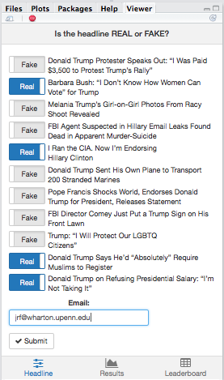
If this works, you are ready to deploy (just remember to swap the line commenting above back to where it stood).
5 Deploy
Luckily this part is quite straightforward.
Run the deployApp command
rsconnect::deployApp()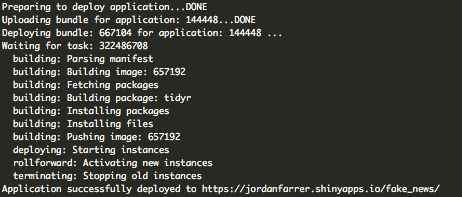
The first time this will take a while as all package dependencies are built. When you make a change, simply rerun the same command.